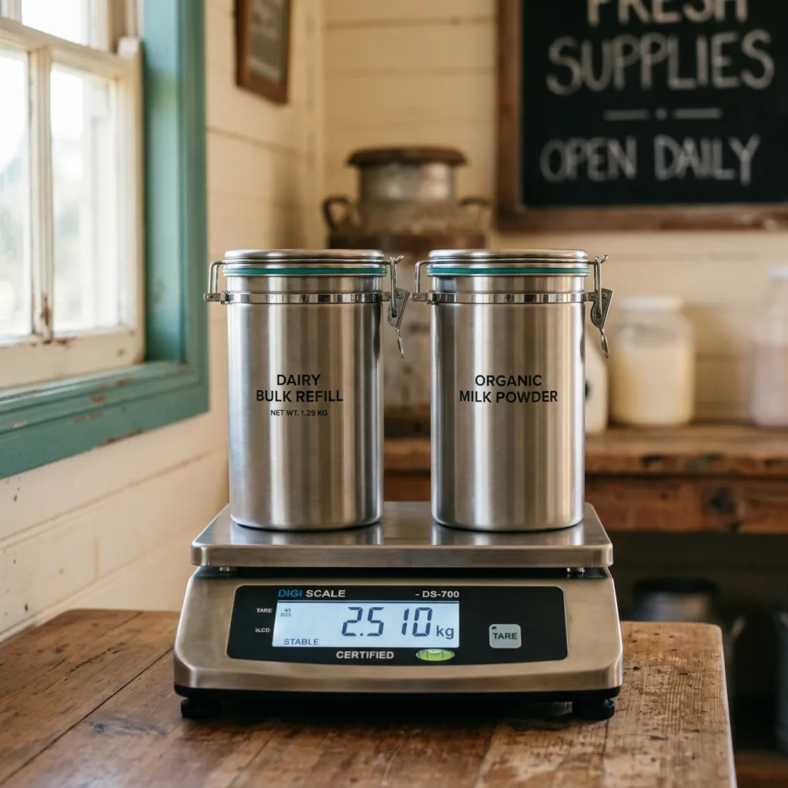

You pay for what's inside.
Steel canisters we lend, staples we sell by weight, packaging you never take home.
Halcyon Tare is a refill counter and delivery service built around a single rule: the container is always ours. You take home rice, oats, laundry liquid or hand soap by weight, sealed in a brushed-steel canister loaned against a small deposit. Every refill is settled on a certified scale against your canister's recorded empty weight, so you are charged for contents alone. Return the canister and your deposit comes back in full.

How the Tare Ledger works
Every canister we lend carries a laser-etched six-digit ID and its exact empty weight — its tare. That figure is stored once, when the canister is first issued, on a certified Class II retail scale accurate to the gram. From then on, refilling is simple arithmetic. We place your canister on the scale, read the gross weight, subtract the stored tare, and charge you for the contents only. The steel, the gasket, the lid: none of it ever appears on your receipt.
Because the tare is fixed to the ID rather than measured afresh each visit, a worn label or a damp lid never inflates your bill. If a canister is damaged and re-issued, it is re-weighed and the ledger updated. Your account shows every refill by ID, weight and date, so a household can see exactly what it has drawn down over a month — grams in, deposit unchanged, packaging at zero.
Everyday household staples without packaging waste
Our stockroom supplies dependable staples that dispense cleanly by weight into returnable brushed steel, focusing on repeat weekly household essentials. In our dry pantry range, you will find kitchen essentials including basmati rice and organic jumbo oats, best matched to our expansive HT-1200 canister for household cooking. For laundry and home cleaning, we supply unfragranced biological laundry liquid and concentrated washing-up liquid decanted safely into our signature HT-750 steel vessel, which features a leak-tested silicone gasket rated for hundreds of transport cycles. Within personal care, our botanic hand soap and vegetable shampoo dispense smoothly into our compact HT-500 canister for bathroom surfaces. You draw down precisely what your shelves demand without collecting disposable plastic detergent bottles.
A transparent container loan that protects your budget
You receive your household staples in sealed brushed-steel vessels that remain our permanent property, loaned against a simple, fully refundable deposit. Our compact HT-500 container carries a three-pound deposit, the flagship HT-750 canister sits at four pounds, and our expansive HT-1200 vessel requires five pounds fifty. When your supply runs low, return the empty canister at our Bedminster counter or hand it to our delivery driver during your next scheduled round. We swap full containers for your spent units immediately, and your deposit balance transfers across without extra fees. Should a canister incur surface dents during ordinary rotation, our workshop accepts the unit without penalty while leaving your full refund intact.
Class II Trading Certification
Operating under formal UK non-automatic weighing instruments regulations for single-gram retail accounting.
- Scale AccuracyClass II Certified (±1g)
- Sanitisation Standard3-Stage Thermal Wash
- Gasket Maintenance100% Inspection & Swap
- Vessel IntegrityLaser Tare Verification
Metrology standards and commercial sanitisation
Every calculation recorded inside our digital ledger rests upon rigorous legal metrology and strict sanitisation protocols. Our weighing instruments operate under formal Trading Standards Class II certification, undergoing regular calibration to maintain single-gram accuracy across every refill. You never pay for residual air or container mass when restocking your pantry. Between customer circulations, returned canisters pass through a three-stage thermal wash inside our commercial sanitisation chamber, dissolving residue and eliminating contaminants completely. Once inspected under bright laboratory illumination, each vessel receives a fresh silicone sealing ring and a tamper-evident lid strip before returning to the dispensing floor. This separation between stockroom filling and container washing guarantees that every canister arriving at your doorstep meets professional food hygiene standards.
Proven across Bristol households since 2021
"We live near North Street where storing plastic laundry bottles was frustrating. Having oats and laundry detergent delivered in clean steel jars simplifies our kitchen shelves and eliminates household recycling trips completely."
— Martha V., Southville
"The tare ledger is brilliant for our budget. Because the empty weight of each steel jar is laser-etched into the metal, we only pay for the exact grams of basmati rice we consume."
— David K., Bedminster
"Returning empty canisters to the rider for freshly sealed replacements feels effortless. We stopped buying plastic detergent tubs three years ago and never looked back at supermarket shelves."
— Elena G., Redland